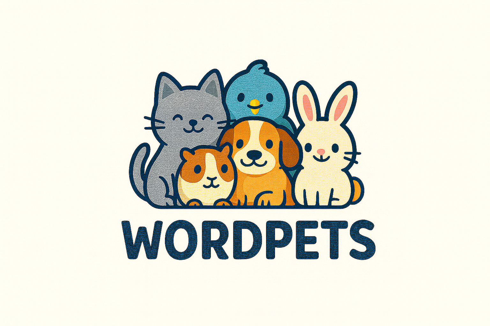

Reading and writing support for grades 3–6
A small, fixed-time Zoom group with Ilana Azulai for English-speaking kids in Israel who talk fluently but read and write below where they should be.
One group, one time each week, no driving. Wednesday or Thursday afternoons, starting after Sukkot.

What the group helps with
Real reading and writing practice, gentle correction, and enough repetition for skills to stick.
Small Zoom groups
Two to six children at a similar reading stage, so each child gets attention and reads aloud every week.
Reading that leads somewhere
Word attack, fluency, spelling and short writing are connected in one calm lesson flow, with texts that suit an 8-to-12-year-old.
Confidence first
Kids this age know when they're behind. Ilana keeps the tone warm and matter-of-fact, so they're willing to try even when reading feels hard.
Fixed time, no juggling
Same day, same time, every week, from home. Steady reading growth without another thing to schedule.
How it works
From the form to the first class in three steps.
Fill in the short form
Your child's grade, where they are with reading, and whether Wednesday or Thursday afternoon works. Two minutes.
We confirm the group
Once at least two children fit the same afternoon and reading stage, you get the class time, the Zoom link and payment details. First week refundable.
Class starts after Sukkot
An 8-week term, once a week. You get a short WhatsApp note after each class on what was covered.
Meet Ilana
Ilana Azulai is a native English speaker and certified English teacher with over 20 years of experience helping children learn to read and write — from early literacy with young learners to leading English programs as a director. She holds a Master's in Educational Leadership (valedictorian) and a TEFL teaching certificate, and was awarded the Tzemach David Prize of Excellence in Education in 2024.
Living in Israel and a mom herself, Ilana knows exactly how to make English click for kids who are behind and know it. Most of her classes are grades 3 to 8, and her lessons are warm, patient and structured — because kids try hardest when they feel safe. With WordPets, she brings that to small groups, live on Zoom.
Reserve a spot for the first term
Groups run once at least two children fit the same afternoon. Fill this in and we'll confirm on WhatsApp.
Questions first? WhatsApp Ilana · 054-747-1256
Questions & answers
What grades are the classes for?
Grades 3–6. The group is for English-speaking kids who talk fluently but read or write below grade level. Children are grouped by reading stage, not by age, so a group stays at one level.
How much does it cost, and when do we pay?
500 ₪ per month. The first week is paid up front to reserve the spot, and fully refunded if you decide it's not the right fit. After that, monthly by Bit or bank transfer.
When does it start, and how long is a term?
The first term starts the week after Sukkot and runs 8 weeks, once a week, 60 minutes, Wednesday or Thursday afternoon.
How big are the groups?
Two to six children, all at a similar reading stage, so every child gets attention and reads aloud every week.
What do we need to join?
A tablet, laptop or computer with a webcam, a quiet spot, and a pencil and paper. We send the Zoom link before each class.
Is there a WordPets app?
There is a separate practice app built for younger readers. It is not part of this group and you don't need it. If Ilana thinks it will help your child, she'll say so.